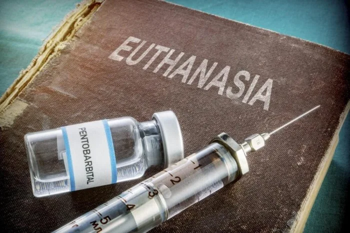
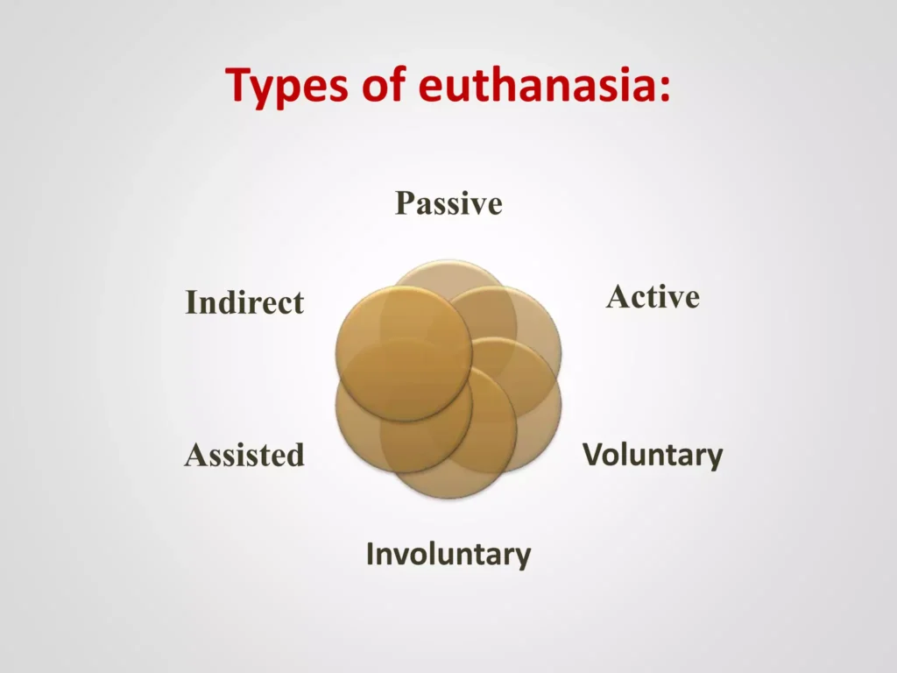

Expanded Nursing Uganda Explanation
Euthanasia should be understood beyond a short definition. Link the concept to patient history, focused assessment, common risks, nursing priorities, documentation and evaluation of outcomes.
01 **Euthanasia**
Euthanasia refers to the practice of intentionally ending a person’s life to relieve pain and suffering.
- Euthanasia comes from the Greek words “ Eu ” (good) and “ Thanatosis ” (death), meaning “Good Death” or “Gentle and Easy Death.” It is often referred to as “ mercy killing .”
- Euthanasia involves ending a person’s life, either through lethal injection or suspension of medical treatment.
- The term “euthanasia” was first used in a medical context by Francis Bacon in the 17th century to describe a painless, happy death where it was a physician’s duty to alleviate physical suffering
02 **Types of Euthanasia**
- Active Euthanasia Definition : Death is brought about by a direct action, such as administering a high dose of drugs.
- Example : Taking a high dose of drugs to end a person’s life, with or without the aid of a physician.
- Passive Euthanasia Definition : Death results from an omission, like withholding or withdrawing treatment.
- Examples : Withdrawing treatment: Turning off life-sustaining machines.
- Withholding treatment: Refraining from performing surgery that might extend the patient’s life for a short period.
- Voluntary Euthanasia Definition : The patient willingly cooperates without external pressure.
- Example : A patient makes an autonomous decision to end their life with assistance.
- Non-Voluntary Euthanasia Definition : A decision is made for an unconscious or incapable patient.
- Example : An appropriate person makes the choice for an unconscious patient, which can sometimes be considered a favor for the patient.
- Indirect Euthanasia Definition : Providing treatments (mainly to reduce pain) with the side effect of shortening the patient’s life.
- Example : Administering pain-relieving treatments that inadvertently shorten the patient’s life.
03 **Religious Perspectives on Euthanasia**
1. Islam:
- Beliefs : Muslims generally oppose euthanasia, considering life sacred and under Allah’s control.
- Permissible Exceptions: The Islamic Medical Association of America (IMANA) allows for the discontinuation of mechanical life support for patients in a persistent vegetative state.
2. Christianity:
- Stance : Most Christian denominations oppose euthanasia, emphasizing the sanctity of life.
- Ethical Considerations : Many churches stress not interfering with the natural process of death and respecting human life as a gift from God.
3. Judaism:
- Diverse Views : Jewish medical ethics show division on euthanasia and end-of-life treatment.
- Acceptance : Some support voluntary passive euthanasia in specific circumstances.
4. Shinto:
- Beliefs : In Japan, where Shintoism is dominant, a majority of religious organizations agree with voluntary passive euthanasia.
- Opposition : Shintoism discourages artificial life prolongation.
5. Buddhism:
- Compassion Principle : Compassion is a core value in Buddhism and can be used to justify euthanasia in relieving unbearable suffering.
- Moral Boundaries : Despite compassion, Buddhism maintains restrictions on taking actions aimed at destroying human life.
04 Nurses Roles in Euthanasia
Phase I: Pre-Euthanasia
- Assessment: Listen attentively to the patient’s request for euthanasia.
- Assess the underlying reasons for the request and contributing factors.
- Evaluate the patient’s knowledge regarding their medical diagnosis, prognosis, and available alternatives, including palliative care.
- Assess the patient’s general condition, physical examination, and the severity of their illness.
- Evaluate the patient’s family’s reaction to the request for euthanasia, encourage communication, and identify their needs.
- Consultation : Nurses become advocates representing the patient’s condition and their relatives’ wishes in a panel of experts, including clinical psychologists, social workers, nurses, and doctors.
- Written Consent: Ensure the consent process takes place in a quiet and non-disturbing environment.
- Explain the consent with a non-threatening tone and allow time for questions.
- Ensure that the patient and their family fully understand the euthanasia process, potential discomfort, and the patient’s right to revoke their request within a specified period.
Phase II: Intra-Euthanasia
- Preparation : Establish intravenous access for medication administration.
- Reiterate the procedure to the patient and family members, providing reassurance and support.
- Assist in preparing medication, including sedatives, analgesics, and euthanatics, and ensure proper labeling.
- Administer premedication, such as midazolam, if the patient wishes to be unaware of the moment of coma induction.
- Assistance : Prepare an emergency set as per the protocol.
- Offer emotional support to family members if present during the procedure.
- Record : Maintain a detailed record of all medications used, events, and persons involved.
- Complete forms, including signed consent forms, pain assessment records, records of euthanasia, and the last office chart.
Phase III: Post-Euthanasia
- Certifying Death: After doctors have certified the patient’s death, nurses can explain the cessation of euthanasia.
- Support for the Family: Provide emotional support to the patient’s family, as they may experience grief and guilt.
- Offer reassurance and actively listen to their feelings.
- Utilize communication and counseling skills to address their emotional needs.
- Consider timely referral to a counselor for uncontrolled emotions.
- Safe Disposal: Ensure that all unused euthanatic agents are returned to the pharmacy for proper disposal.
- Prevent the improper use of euthanatic agents through appropriate disposal methods.
- Incident Evaluation: Complete an incident evaluation form in case of unexpected problems, such as underdosing.
Ethical Dilemmas Surrounding Euthanasia
An ethical dilemma in euthanasia refers to a situation where there is a conflict between different ethical principles, values, or beliefs when considering end-of-life decisions and the practice of intentionally hastening the death of a person who is suffering from a terminal illness or unbearable pain.
Ethical dilemmas often arise due to conflicting principles such as autonomy (the right to self-determination and control over one’s own life), beneficence (the duty to do good and alleviate suffering), non-maleficence (the duty to do no harm), and the sanctity of life (the belief that life is inherently valuable and should be protected).
These ethical dilemmas can manifest in various ways, such as:
- Balancing Autonomy and Sanctity of Life: One ethical dilemma revolves around the tension between respecting an individual’s autonomy and the belief in the sanctity of life. Advocates for euthanasia argue that individuals should have the right to decide when and how to end their lives to escape suffering, while others believe that life is inherently valuable and should be protected, even if the individual desires to die.
- A patient with a terminal illness expresses a strong desire to end their life to avoid further suffering. However, healthcare professionals and family members who believe in the sanctity of life may struggle with the decision to honor the patient’s autonomy and assist in euthanasia.
****
- Role of Healthcare Professionals and their morals: : Healthcare professionals often face ethical dilemmas when their personal beliefs conflict with their professional duty to provide care and alleviate suffering. Some healthcare providers may have moral or religious objections to participating in euthanasia, which can create a conflict between their professional responsibilities and personal values.
- A nurse who opposes euthanasia on moral grounds may face a dilemma when asked to administer medication to hasten the death of a patient. They must navigate their personal beliefs while also respecting the patient’s autonomy and ensuring the provision of appropriate care.
****
- Palliative Care and Access : The availability and quality of palliative care can present ethical dilemmas related to euthanasia. If individuals do not have access to adequate pain management and end-of-life care, they may feel compelled to choose euthanasia as a means to alleviate their suffering.
- A patient with a terminal illness who is experiencing severe pain and has limited access to palliative care options may consider euthanasia as a way to find relief. This raises ethical questions about the responsibility of healthcare systems to provide comprehensive end-of-life care and support.
****
- Psychological Impact and Role : Euthanasia can have a profound psychological impact on healthcare professionals involved in the process, as well as on family members and loved ones. Witnessing or participating in euthanasia may lead to moral distress, guilt, or emotional trauma, raising ethical concerns about the potential harm inflicted on those involved.
- A physician who performs euthanasia on a patient may experience emotional distress and moral conflict, questioning the decision and its implications. This highlights the ethical dilemma of balancing the relief of suffering with the potential psychological harm to healthcare professionals.
****
- Assessing the Quality of Life and Need : Evaluating the subjective experience of suffering and the quality of life is another ethical dilemma. Determining whether a person’s suffering is unbearable and if their quality of life has significantly deteriorated can be challenging, as it involves subjective judgments and personal values.
- A patient (ALS) may experience a gradual loss of motor function, leading to difficulties in breathing, swallowing, and speaking, may also suffer from pain, discomfort, and a loss of independence and autonomy.Assessing the quality of life becomes an ethical dilemma. Healthcare professionals, caregivers, and family members may have differing perspectives on what constitutes an acceptable quality of life. Some may argue that the patient’s suffering is unbearable, and their quality of life has significantly deteriorated, others may argue that even in the face of severe physical limitations, individuals can find meaning and joy in their lives. They may emphasize the importance of palliative care, psychological support, and interventions to alleviate suffering, rather than resorting to euthanasia.
****
- Safeguards and Slippery Slope : Establishing clear criteria and safeguards to prevent abuse or misuse of euthanasia can be an ethical challenge. The concern of a “slippery slope” arises when there is a fear that legalizing euthanasia for specific cases may lead to broader acceptance and potentially open the door to abuse or involuntary euthanasia.
- In a country where euthanasia is legal for terminally ill patients with unbearable suffering, there is a debate about whether to expand the criteria to include individuals with chronic illnesses or psychiatric conditions. Proponents argue that these individuals may also experience significant suffering and should have the right to choose euthanasia. However, opponents express concerns about the potential slippery slope. They fear that individuals with chronic illnesses or psychiatric conditions may be coerced or influenced into choosing euthanasia, even if they may still have potential for improvement or quality of life.
05 Nursing Uganda Clinical Lens
Use Euthanasia as a practical nursing topic, not only a memorized definition. Focus on comfort, dignity, symptom control, communication and family support.
- What to understand first: define euthanasia, identify the normal or expected pattern, then explain what changes when the patient is unwell.
- Why it matters in care: the nurse must recognize risk early, explain findings clearly, document accurately and know when to escalate.
- How to revise it: connect each point to assessment, nursing diagnosis or care problem, intervention, rationale and evaluation.
06 Assessment Guide
- Pain and other symptoms, function, sleep, appetite, mood, spiritual distress and family concerns.
- Medication response, side effects, wound or skin needs and end-of-life preferences.
- Caregiver burden, home resources and urgent red flags.
07 Nursing Priorities, Rationales and Outcomes
- Relieve distressing symptoms and prevent avoidable suffering.
- Communicate honestly, respectfully and at the patient's pace.
- Support family care, medication access, dignity and continuity.
The rationale for these priorities is patient safety: nursing actions should prevent deterioration, reduce discomfort, support recovery and create clear evidence for the next caregiver.
- Expected outcome: Symptoms are better controlled, patient preferences are respected and the family knows when to seek help.
08 Patient Teaching and Revision Check
- Explain euthanasia in simple language the patient or caregiver can repeat back.
- Teach warning signs, medicine or follow-up instructions, hygiene or lifestyle points where relevant.
- For exams, prepare a short answer using: definition, causes or risk factors, signs, assessment, management, complications and prevention.
- For ward practice, document baseline findings, actions taken, patient response and the plan for review.
Illustrations and Diagrams (11)




3 more diagrams available, open the lesson for full illustrations.
Related Video Lectures
Watch nursing lecture videos on YouTube for this topic. Opens in a new tab.
Watch on YouTubeExternal link: YouTube may use its own cookies and terms. Nursing Uganda is not affiliated with YouTube.